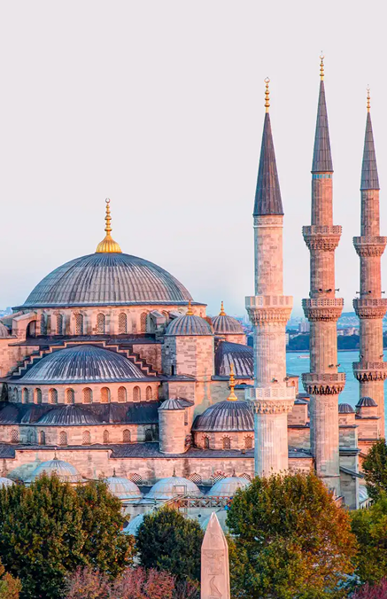

From Istanbul to Santiago
Born from a dream to share the flavors of Turkey, Topkapi Tazelik brings the spirit of Istanbul to Santiago de Compostela.
Chef Aylin Demir, inspired by his grandmother's kitchen near the Topkapi Palace, combines tradition and creativity to craft dishes filled with warmth, spice, and soul.
When he arrived in Galicia, he fell in love with the city — and decided to blend Turkish passion with Galician charm.
